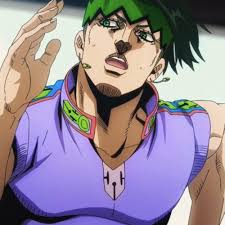

Bookmarks
@WebDev

Giorno Giovanna
@giorno_giovanna · Jul 31
The anime adaptation of Golden Wind was personally announced by series creator Hirohiko Araki at the "Ripples of Adventure" art exhibition on June 21, 2018.Golden Wind is chief directed by returning director Naokatsu Tsuda, who is accompanied by series directors Yasuhiro Kimura and Hideya Takahashi and the senior writer Yasuko Kobayashi. The character designer for Golden Wind is Takahiro Kishida, and the animation director is Shun'ichi Ishimoto. Yugo Kanno returns as composer from previous seasons.The series is 39 episodes long.

Rohan Kishibe
@rohan_kishibe · May 31
JoJo's Bizarre Adventure: Stardust Crusaders is the second season of the JoJo's Bizarre Adventure anime by David Production, based on the JoJo's Bizarre Adventure manga series by Hirohiko Araki. It is the second animated adaptation of the manga's third part, Stardust Crusaders, following an original video animation series by A.P.P.P. that was released first in 1993 and continued later in 2000.